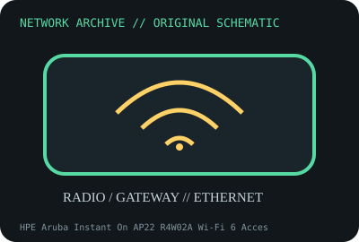

[ MODEL-SPECIFIC NETWORK HARDWARE ]
HPE Aruba Instant On AP22 R4W02A Wi-Fi 6 Access Point
Dual-radio 2x2 Wi-Fi 6 indoor AP with Gigabit Ethernet uplink. Confirm exact product label and revision before applying specifications.

IDENTIFICATION: Confirm manufacturer PID, hardware revision, device ID or module suffix. Nominal standards/link rates are not measurements of payload performance.
Exact specifications and compatibility
| Dedicated subcategory | Network appliances: routers, access points & switches |
|---|---|
| Exact product/model | HPE Aruba Instant On AP22 R4W02A Wi-Fi 6 Access Point |
| Bus, ports and physical interface | One Gigabit Ethernet RJ-45 uplink; 802.3af/at PoE or DC adapter depending package; internal antennas. |
| PHY, radio or protocol | 802.11ax 2x2 on 2.4 and 5GHz; max 574Mb/s 2.4GHz and 1.2Gb/s 5GHz PHY rates in manufacturer datasheet. |
| Nominal rate (not measured) | Up to 1.7Gb/s combined advertised PHY maximum is not one-client throughput; wired link is 1Gb/s nominal. |
| Measured throughput | No measured benchmark is claimed for a physical specimen. A valid result must record host/peer, link partner, media/cable, driver/firmware, traffic pattern, test tool and duration. |
| Drivers, OS and firmware | Aruba Instant On cloud/mobile/web management and firmware; supported AP software lifecycle is vendor managed. |
| Compatibility | Requires Gigabit Ethernet and compatible PoE/DC source; regional channel availability and supported Instant On app/networking ecosystem apply. |
| Variant warning | AP22 R4W02A is not AP11, AP25 or Aruba enterprise AP-505. Hardware, PoE, radio rate and management model differ; verify SKU label. |
Model and revision notes
AP22 R4W02A is not AP11, AP25 or Aruba enterprise AP-505. Hardware, PoE, radio rate and management model differ; verify SKU label.
Aruba Instant On cloud/mobile/web management and firmware; supported AP software lifecycle is vendor managed.
Requires Gigabit Ethernet and compatible PoE/DC source; regional channel availability and supported Instant On app/networking ecosystem apply.
Archival, ESD and preservation notes
Preserve product SKU, serial/MAC, PoE source, firmware and mount; disconnect power and retain the original bracket/accessories.
Document source URL, access date, document revision and specimen label/condition. Preserve without credentials or private configuration.
Primary manufacturer and standards sources
- HPE Aruba Instant On AP22 official data sheetPrimary manufacturer or standards documentation; verify exact SKU and host revision.
- Aruba Instant On AP22 support documentationPrimary manufacturer or standards documentation; verify exact SKU and host revision.
- IEEE 802.11 standards working groupPrimary manufacturer or standards documentation; verify exact SKU and host revision.
Manufacturer statements cover the named part or its documented product family; the exact labeled revision and vendor compatibility list take precedence.